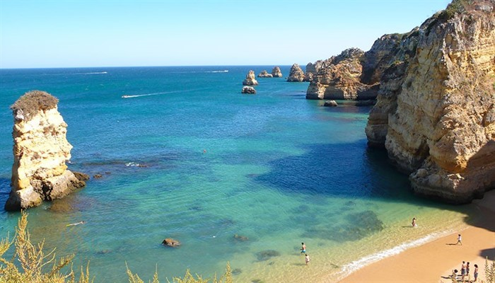

Algarve, Tavira, Vila Real de San Antonio, Vila do Bispo, Portimao, Olhao, Lagoa, Lagos, Monchique, Castro Marim, Albufeira, Aljezur ve bunların etrafında bulunan diğer birçok şehirden meydana gelen bir bölge. Bunlar arasında en popüler olanları Faro ve Portimao, ayrıca Albeufeira ve Olhao’yu da ziyaret etme seçeneğiniz var. Bu dört şehirle beraber Solves ve onun kalesi, Algarve’nin en çok ziyaret edilen yerlerinden. Buralarda hiç şüphesiz en iyi hizmetlerin tadını çıkarabiliriz.
Eğer düşük fiyatlı konaklama seçenekleri arıyorsanız, Portimao mükemmel bir seçim olacaktır. Burada sadece kataloglara bakarak tadını çıkarabileceğiniz birçok hizmet ve yapabileceğiniz birçok plan bulunmakta. Eğer bir su sporları aşığıysanız, yapabileceğiniz çok şey var.
Burası Portekiz’in en popüler ve ilginç turistik noktalarından biri Bu yüzden yıllar boyu önemini korumayı başarabildi. Vahşi plajların ve köylerin güzelliği, milyonlarca turistin bu Portekiz bölgesini seçmesini sağlıyor. Faro keşfedilecek birçok noktası olan geleneksel bir balıkçı kasabası. Burada görülmesi gereken birçok rota ve yapılacak birçok şey var.